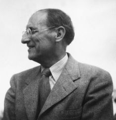
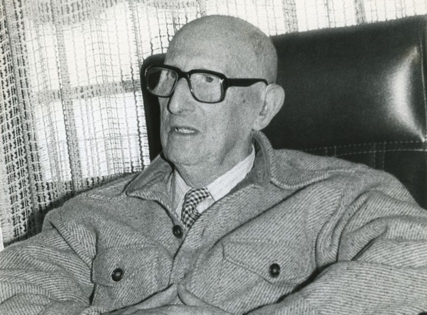

Jorge Guillén Álvarez. (Valladolid, 18 de enero de 1893 – Málaga, 6 de febrero de 1984). Poeta español, perteneciente a la Generación del 27.
Estudia Filosofía y Letras en Madrid y en Granada, graduándose en 1913. En 1924 se doctora y visita Alemania después de haber sido lector de español en la Sorbona (1917-1923), actividad que repite años después en Oxford. En 1925 obtiene la cátedra de Literatura española en la Universidad de Murcia, pasando a la de Sevilla tres años después. Ocupa este último puesto hasta que, acabada la guerra civil, se exilia a los Estados Unidos, donde imparte Literatura y Letras, hasta el final de su carrera.
Realiza colaboraciones en las revistas intelectuales españolas más importantes (España, La Pluma, Índice, Revista de Occidente) y posteriormente en las hispanoamericanas. Entre otras actividades, traduce a Paul Valéry (Cementerio marino) y a Jules Supervielle.
Su poesía se edita en la Revista de Occidente desde 1919 hasta 1928; en este último año aparece con el título de Cántico, considerado a menudo como el libro cumbre de su generación. En una segunda etapa, en la que se reflejan diversos conflictos políticos, publica las tres partes de Clamor, tituladas Maremagnum (1957), Que van a dar en la mar (1960) y A la altura de las circunstancias (1963). Son temas recurrentes en su obra la nostalgia del pasado, el paso del tiempo y la reflexión sobre la vejez. Más adelante, con Homenaje (1967), retorna al enfoque de su primera etapa. Sus últimas obras son Y otros poemas (1973) y Final (1982).
En 1976 recibe el máximo galardón de las letras hispánicas, el Premio Miguel de Cervantes.

Hacia el final Llegamos al final, A la etapa final de una existencia. ¿Habrá un fin a mi amor, a mis afectos? Sólo concluirán Bajo el tajante golpe decisivo. ¿Habrá un fin al saber? Nunca, nunca. Se está siempre al principio De una curiosidad inextinguible Frente a infinita vida. ¿Habrá un fin a la obra? Por supuesto. Y si aspira a unidad, Por la propia exigencia del conjunto. ¿Destino? No, mejor: la vocación Más íntima.